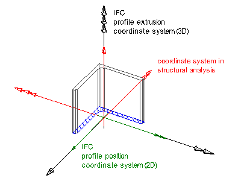

EXPRESS-G diagram
EXPRESS-G diagramThe schema IfcProfileResource defines the two dimensional profiles or cross sections, used to define geometric shape representations. Profile definitions are applied to:
\\\\\\\\\\\\\\* swept surfaces \\\\\\\\\\\\\\* swept area solids \\\\\\\\\\\\\\* sectioned spines
NOTE Profile definitions are not subtypes of geometric representation item and can not be used directly to geometrically represent an object.
Profiles can be used to either define a curve or an area. In case of a curve, only the boundary is in the domain of the profile definition, in case of an area the boundary and the inside is in the domain of the profile definition. A curve can be used for
\\\\\\\\\\\\\\* swept surfaces \\\\\\\\\\\\\\* sectioned spines
and an area can be used for
\\\\\\\\\\\\\\* swept area solids \\\\\\\\\\\\\\* sectioned spines
NOTE The use of profile definitions is the preferred way to define prismatic shapes to represent products.
The profile definition (IfcProfileDef) can be instantiated by the various subtypes. There are four different groups of profile definitions:
\\\\\\\\\\\\\\* parametrically defined profiles, these profiles are defined by a 2D position coordinate system and dimension parameters to generate a 2D form. \\\\\\\\\\\\\\* explicitly defined profiles, these profiles are defined by a (single or multiple) 2D curve(s) defined in the parent coordinate system. \\\\\\\\\\\\\\* derived profiles, these profiles are created by a Cartesian transformation of a parent profile. \\\\\\\\\\\\\\* composite profiles, these profiles are compositions of other profiles
When used as the curve or area to be swept into a surface or solid, the 2D coordinate system of the profile is mapped into the xy plane of the 3D coordinate system of the swept surface (subtypes of IfcSweptSurface), the swept area solid (subtypes of IfcSweptAreaSolid), or the sectioned spine (IfcSectionedSpine). The extrusion direction is along the z axis of the 3D coordinate system (or an extrusion vector being not perpendicular to the z axis, or a rotation that has a tangent into the z axis at the point of origin).
The use of coordinate axes in IFC is not identical with the general convention for the use of coordinate axes in structural analysis. The following conversion should be used, as shown in Figure 307:
| IFC axes convention | Structural analysis axes convention |
| +X | -Y |
| +Y | -Z |
| +Z | +X |
|  |
Figure 16 — Profile coordinate system |
 Report an issue
Report an issue Link to this page
Link to this page